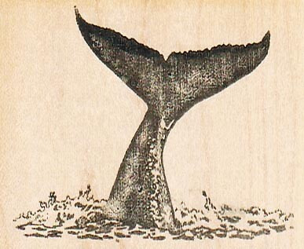

From
The
Ocean
The
Ocean
A Note From Anshu
Hiya!
Welcome to my digital ocean space.
My work is a love letter to the ocean and our planet. Rooted in real, human storytelling, I aim to connect people to all that is wild and naturally beautiful on Earth.
The ocean isn't just something I care about. It's where I thrive. Whether I'm drifting alongside whales, gliding with rays, or documenting coral reefs, my goal is to share what it means to truly care about something bigger than ourselves.
Stay awhile. And maybe we can turn dream projects into reality together.
Stay jungly. Keep places wild.
Anshu M. Pandit
Ocean
———
2025
———
2025